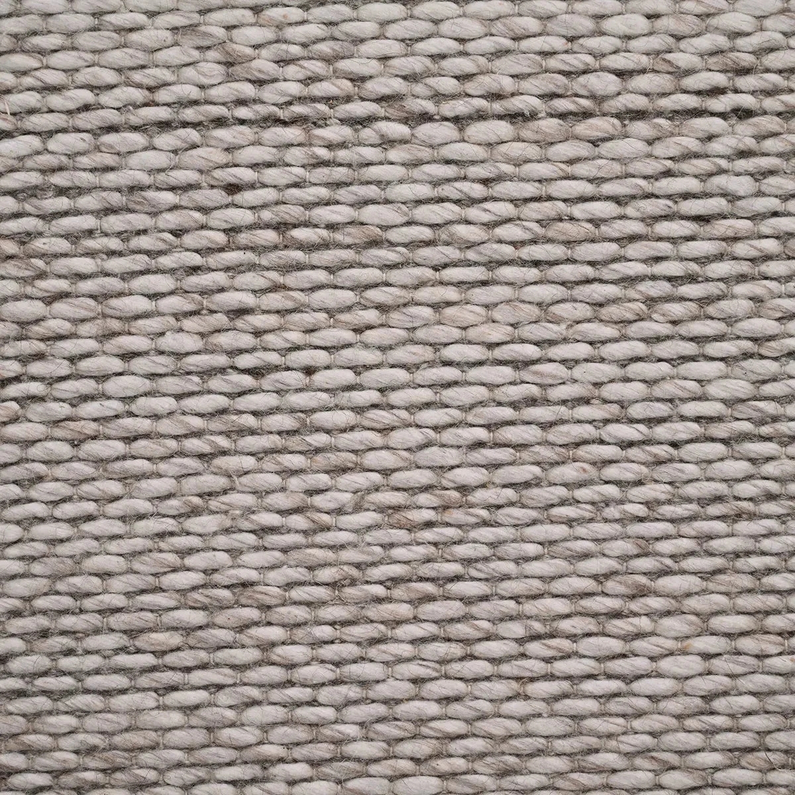
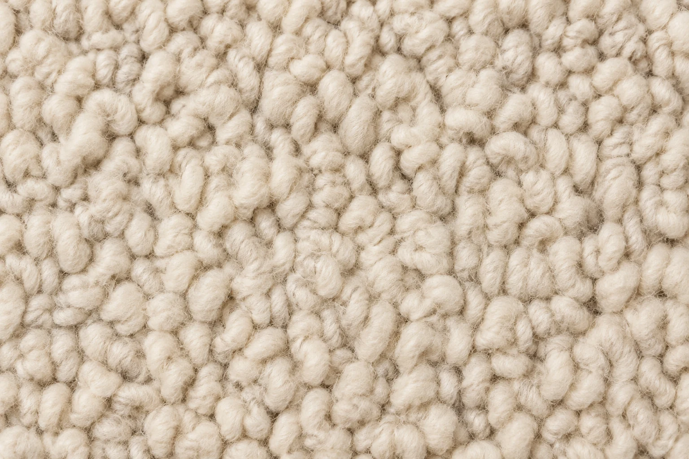
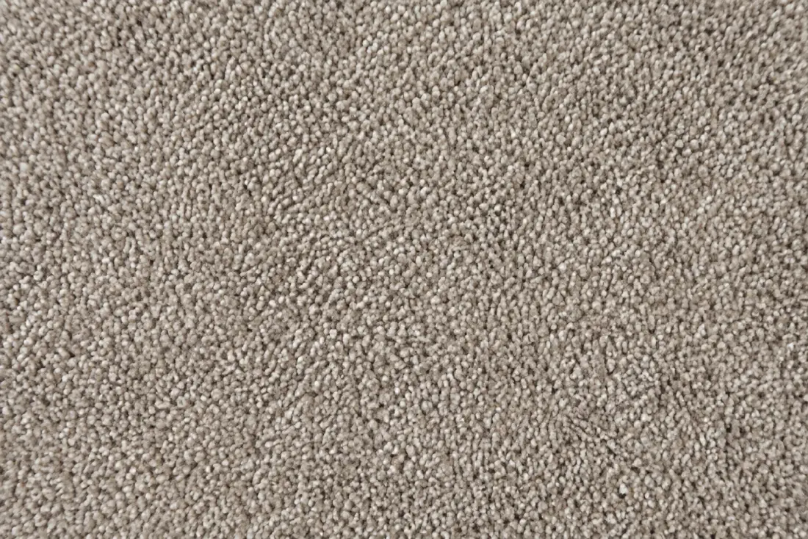
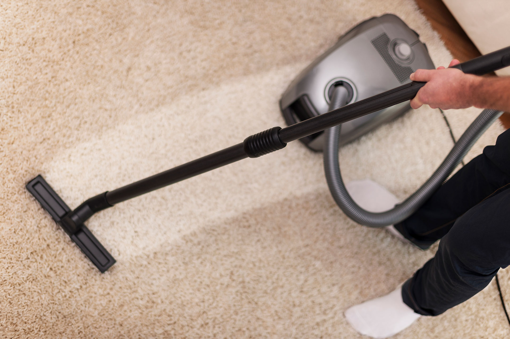
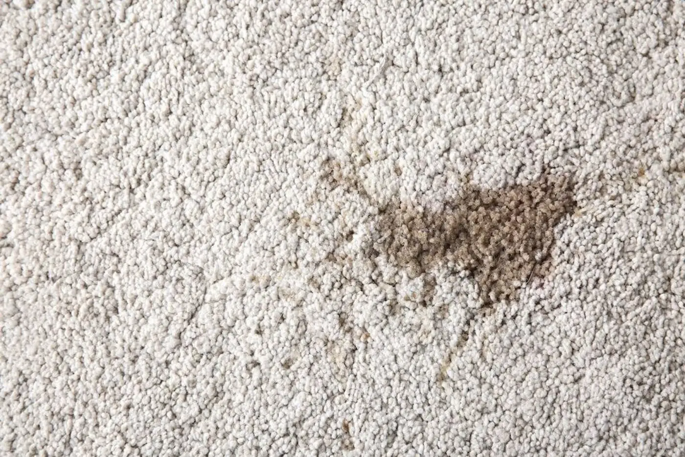
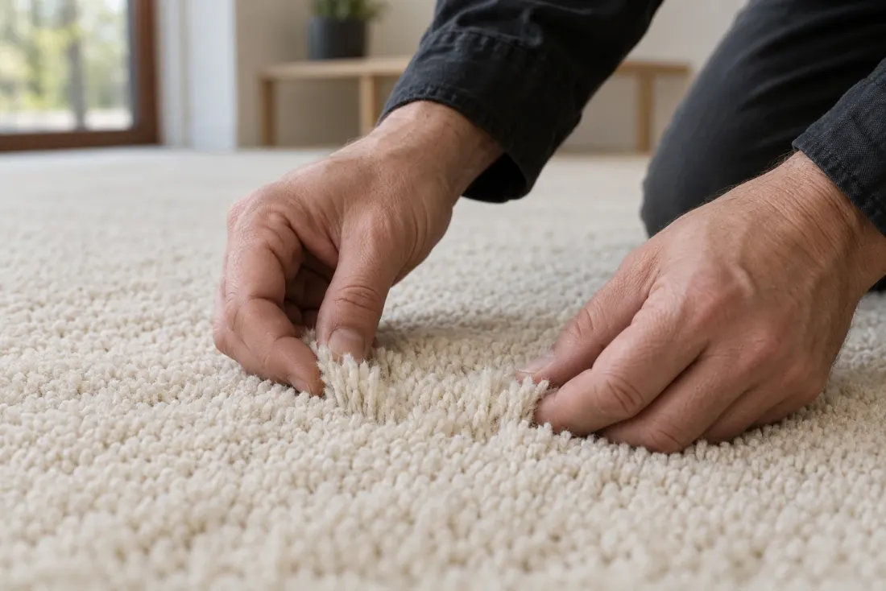

The size
Share the dimensions, rooms or number of rugs so the scope is clear.

Carpet cleaning options for your favourite rooms, your everyday life and your kind of home.
Find my cleanYour provider should identify the material before recommending a treatment.

Discuss moisture, temperature and suitable products for natural fibres. Always share the manufacturer’s care guidance.

Ask about the fibre type, traffic areas and any products already applied. The right treatment depends on the actual condition.
A careful assessment matters. Mention construction, backing, colours and previous repairs before agreeing to cleaning.

Useful details help a specialist give you a more considered recommendation.
A care label or material description helps establish what treatment may be suitable.
Mention the source and age of marks, along with any products already tried.
Include dimensions, access and the areas that receive the most wear.
A small mark can call for a thoughtful approach. Move over the carpet to bring the cleaning illustration to life.
An animation of care, not a treatment recommendation. Always follow your rug’s care label and your provider’s advice.

Hover to see a little care in motionA little preparation makes the appointment easier. Confirm your provider’s own instructions first.
No generic price promise. A quote should reflect your actual space.
Share the dimensions, rooms or number of rugs so the scope is clear.
Mention heavy traffic, spots, pet accidents or specialist materials.
Discuss stairs, parking, collection and access before booking.
Follow your provider’s drying and aftercare advice. Keep the area ventilated as advised and wait until fully dry before replacing furniture or a rug pad.
It varies with the method, material, airflow and conditions. Ask your provider for an estimate specific to your appointment.
Some stains or changes to fibres are permanent. Contact the provider to discuss their assessment and the terms agreed before the service.
Use the care label and your provider’s advice as your starting point. Ask which products and techniques to avoid.
Tell your provider about your carpet before the appointment, so they can assess the fibres, condition and practical details.

Thoughtful care,Ask about experience with your material.
Know what the quote includes.
Allow for the visit and drying.
Discuss expectations with the provider.
Choose when the fit feels right.